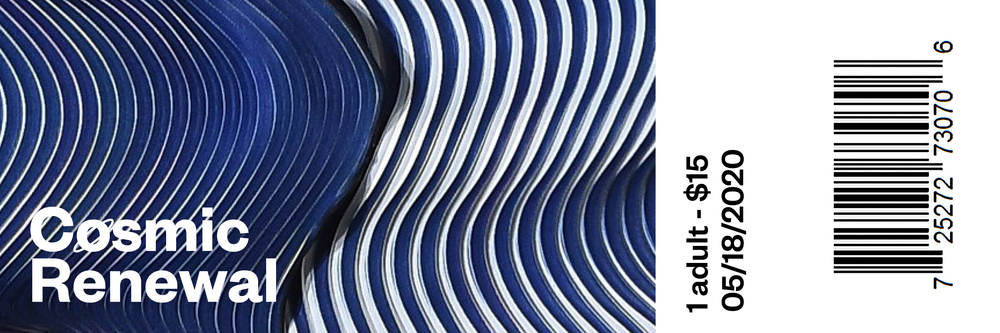
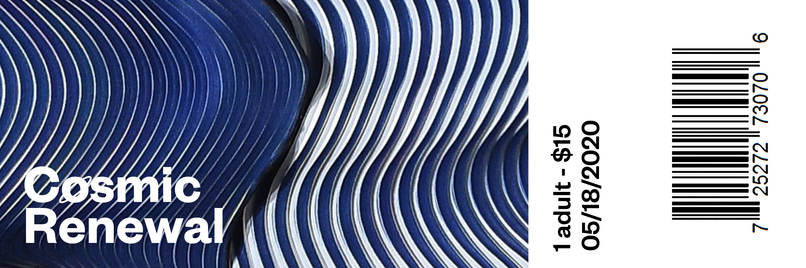

Cosmic renewal
“Cosmic Renewal: The Dawn of a New Space Age” is a mock-exhibit that both defines and dissects the intersection of technology, spacetime, and art. The collection presents work that both embodies and harnesses the themes and motifs of the Space Age, and looks to consider the historical context and how these notions have been increasingly brought into the foreground. The exhibition showcases pieces – ranging from film, music, fashion, and furniture – that span over six decades. “Cosmic Renewal” joins these pieces in an intricate yet symbiotic relationship, coexisting to form a larger whole that leads the way towards a new Space Age, one that is rooted in experience and practice without foregoing the elation and thrill of its predecessor.


 
